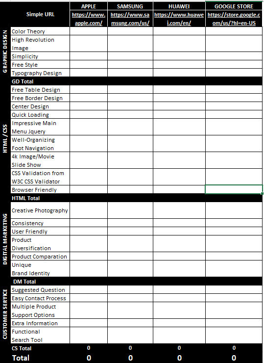
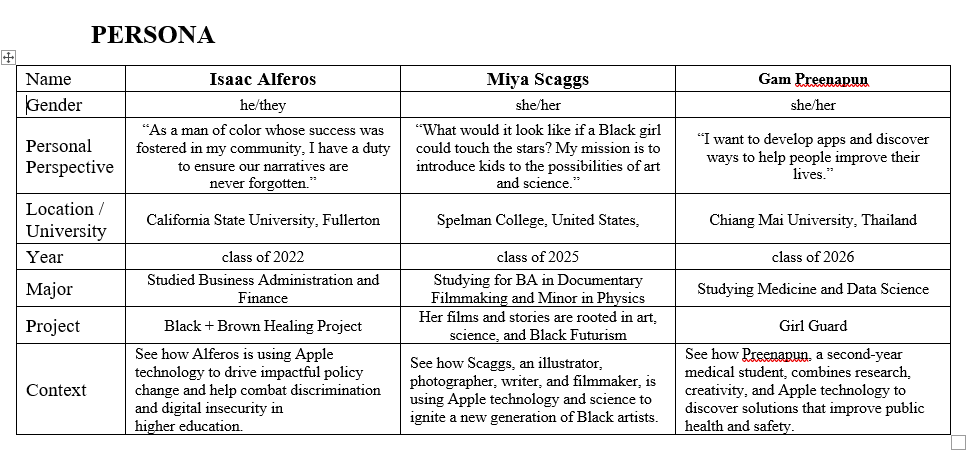

Apple Web Design
Introduction
We evaluated Apple's website as an e-commerce platform, focusing on its cohesive design that aligns with Apple's global brand identity and caters to a broad audience. The assessment compared Apple's site to competitors like Samsung, Huawei, and Google, examining aspects such as graphic design, HTML/CSS, digital marketing, and customer service. Apple's effective human-computer interaction, high-quality content, and innovative strategies, along with their educational technology donations, foster strong customer loyalty and enhance user experience.
Team
Who is Apple's Customer?
Describing Apple is difficult. In part because it has so many different facets, but also because it is a household name to the point that it - as a brand - has little need to define itself. In fact, one must search Apple’s website for a self-description at all. We could only find a description in their 10-K Annual Report from 2022. The company describes itself as “[one that] designs, manufactures and markets smartphones, personal computers, tablets, wearables and accessories, and sells a variety of related services” (Form 10-K, p. 4). In other words, Apple is one of the world’s most financially successful technology juggernauts that has the capacity to furnish one’s home with their devices as well as provide entertainment to the family through adjacent services.
The first group of people that act as an audience for Apple “younger-to-middle-aged consumers” according to start.io, a mobile marketing and audience platform. This is a reasonable audience for Apple to target because these are the people most fluent in the use of the technology Apple sells.
Second, the next major group that acts as the target audience for Apple are women. According to start.io, Apple’s user base is 66% women and 34% men. There are a wide variety of factors that make up women’s choice to buy Apple products, but one component may be the style of Apple’s marketing. According to start.io, Steve Jobs - Apple’s founder - once stated “Apple is not just creating products; it is forging a lifestyle, which breeds a particularly strong sense of brand loyalty among Apple devotees.” This method of branding may suit women better than it does men.
Finally, the third group to use Apple most are those of “middle to high economic status” where the average income of Apple iPhone users was $53,251 in 2018 (start.io). This is understandable as Apple is colloquially understood to be an expensive, luxury brand. Particularly when purchasing the newest models of their products.
Who is Apple's Competitor?
To evaluate Apple's website, we compared it with competitor brands such as Samsung, Huawei, and the Google Store. Our evaluation focused on four primary areas: Graphic Design (GD), HTML/CSS (HTML or H), Digital Marketing (DM), and Customer Service (CS). Given that we are assessing a website, we examined its Graphic Design and HTML/CSS code. Additionally, since Apple operates as an e-commerce platform, we also evaluated its Digital Marketing and Customer Service. These four areas provide a comprehensive assessment of Apple's online presence and effectiveness compared to its competitors.
In the Graphic Design dimension, we divided it into the following sub-categories:
In the HTML/CSS area, we divided into some subdimensions such as:
In Digital Marketing, we divided into some subdomains such as:
In Customer Service, we divided it into some subfactor such as:
We also decided to evaluate Apple by comparing it with other brands such as Samsung, Huawei, and the Google Store. To provide strong evidence, we created a small dataset based on our evaluation, assigning a ranking score from 1 to 10 for each subfactor. Table below demostrate for how to collect these dataset. This approach helps us avoid evaluation bias, demonstrate our contribution to the project, and reflect our user experience across these websites.
In this comparative analysis of Apple's e-commerce platform, we evaluated and compared key aspects of Apple's website with its competitors, including Samsung, Huawei, and Google. Our evaluation was based on four main dimensions: Graphic Design, HTML/CSS, Digital Marketing, and Customer Service. Apple emerged as the clear winner, showcasing its prowess in design, web development, digital marketing, and customer service. Apple's focus on simplicity, high-resolution images, and innovative design elements set it apart, making it a leading template for e-commerce platforms. While Samsung and Huawei have their strengths in product diversification and minimalistic design, respectively, they fall short compared to Apple's overall performance. Google's website, though organized, lacks the immersive and interactive elements found in Apple's platform. In conclusion, Apple's e-commerce platform excels in targeting a broad audience through design excellence, seamless functionality, and customer-centric marketing, solidifying its position as a leading technology brand with strong global loyalty.
How Apple approach the potential customer?
After conducting user research, we found that Apple’s potential customers are predominantly the younger generation. According to UNICEF, the age group from 14 to 29 is the largest generation in history, representing future innovation and possessing the energy to transform obstacles into opportunities. Apple understands that this demographic is keen on discovering new technology that can "move the world forward." Apple's educational strategies, such as those for K-12, higher education, and college students, reflect this understanding. We focused on college students, highlighted by Apple's targeted webpage featuring a powerful image of a girl using Apple products with the slogan "Unstoppable you." The page explains why college students are “unstoppable” and offers student discounts, showcasing Apple's mastery in digital marketing through storytelling.
Apple identifies key student behaviors: performance, productivity, creation, collaboration, and recharge. For performance, Apple highlights how Mac and iPad support academic achievement efficiently. For productivity, the emphasis is on focusing on what matters, illustrated by features like converting handwriting to typed text on the iPad. This promotes paperless study and ease of note-taking. For creation, Apple outlines a simple design process: “Think -> Make -> Build -> Do,” and showcases successful profiles using Apple technology. Collaboration is facilitated by easy sharing between devices. Lastly, Apple encourages students to take breaks with entertainment apps and accessories.
Apple clearly understands student needs, emphasizing the desire to "study smarter, not harder" and excel academically. By using high-quality images, typography, and engaging content, Apple effectively builds product stories that resonate with the younger generation.
The Persona image presents a table featuring three individuals: Isaac Alferos, Miya Scaggs, and Gam Preenapun, detailing their backgrounds and projects.
The scenarios for three individuals, Isaac Alferos, Miya Scaggs, and Gam Preenapun, highlights their projects, contexts, achievements, goals, and usage of Apple technology.
Each scenario demonstrates how Apple products support their academic and creative endeavors, highlighting the integration of technology in their projects and daily tasks.
How Apple earn Customer Loyalty?
This flowchart visualizes the journey of a student integrating Apple products into their academic and personal life. The process begins with the student enrolling in college and selecting a major and classes. The student contemplates whether to enhance their study methods using high-end technology devices. If the answer is yes, the student considers their specific needs for performance, productivity, or creativity, leading them to visit the Apple website. They then select and purchase products such as iPads, MacBooks, iPhones, and accessories. Following the purchase, the student creates an Apple account, engages with the Apple community, and benefits from the ecosystem’s support and updates. This integration facilitates continuous development and support for their Apple devices, enhancing their overall academic and personal experience.
Apple provided valuable insights for our report on students' perceptions of the brand. These three personas and scenarios reveal a strong affinity for Apple products and active participation in the Apple community. Students own multiple Apple devices to support their lifestyle and benefit from seamless, wireless connectivity between products. Apple's tagline, "Record notes with your iPhone. Continue on your Mac," emphasizes this effortless integration.
Isaac exemplifies a multitasking individual balancing roles as a leader, student, and family member while traveling. He relies on powerful devices with "all-day battery life" and unlimited connectivity, which is why he "loves the flexibility of Apple devices." Similarly, Miya uses her iPhone for filming but edits on her MacBook and writes scripts and sketches on her iPad with an Apple Pencil. This combination of devices helps her "streamline the creative process" and supports her various roles and studies. Gam, studying medicine and data science, uses her MacBook, iPad, and Apple Pencil to develop projects like combating sexual harassment and finding scalable solutions to help people.
Apple’s digital marketing highlights the unique features of each product, emphasizing that owning more Apple devices enhances performance, productivity, and creativity. They cultivate a mindset in the younger generation that using Apple technology helps achieve life goals.
Based on these insights, we modeled a typical student journey. Initially, the student attends college without any Apple devices, relying on traditional study methods. Observing peers using Apple devices for note-taking, presentations, and document sharing, the student becomes interested in learning smarter. Seeking quick performance, productivity, and creativity, the student visits the Apple website and purchases a MacBook. To connect quickly with their phone, they buy an iPhone. For sketching and writing, they add an iPad and Apple Pencil. Wanting to listen to music, they get AirPods. For convenience while walking, they purchase an Apple Watch. Over time, they update their devices and engage with the Apple community, discovering new technologies. Eventually, they aspire to be part of the Apple team, creating "something magical." Apple earns their loyalty, and they continue to support younger generations, fostering a lifelong connection with Apple products.
The more we investigated Apple, the more we recognized their remarkable intelligence in human-computer interface and user experience design. Apple undoubtedly deserves its reputation as a pioneer in technological development. They excel in using high-quality images, typography, and content creation to craft compelling narratives that resonate with the younger generation. Their strategies to build and maintain customer loyalty are exceptional. According to our model, Apple has developed a successful product lifecycle loop, encouraging customers to use their products from one generation to the next. To sustain this loop, Apple consistently emerges as a leader in high-end technological advancements.
To foster innovation, Apple established the Apple Campus, aimed at nurturing new ideas from the younger generation. Additionally, they have made significant contributions to education by donating “an iPad to every student, a Mac and iPad to every teacher, and an Apple TV to every classroom.” Since 2014, Apple has participated in the ConnectED initiative, providing “$100 million of teaching and learning solutions to 114 underserved schools across the country.” These donations not only enhance education but also strengthen Apple's positive recognition and customer loyalty.
Apple & Heuristic Evaluation
Through a comprehensive heuristic evaluation, our team uncovered some meaningful opportunities to enhance the user experience of the Apple website. Guided by Jakob Nielsen's 10 usability heuristics, we conducted an expert review of core site pages and workflows.
The issues identified centered primarily around visibility, consistency, and flexibility of use. At times, the site lacked clear communication with users due to small text, ambiguity in flows, or insufficient guidance. While relatively minor compared to competitors, addressing these pain points presents opportunities to polish the user experience.
Our recommendations aim to boost visibility through larger, readable text and obvious navigational cues. We advise promoting consistency through standardized language and uniformity across platforms. To improve flexibility, we suggest additional account creation options and alternative customer service access points.
Apple sets the standard for many aspects of user-centered design. By making these small refinements, Apple could further optimize interactions, enable self-service use, and reduce user frustration. With intuitive and seamless digital experiences now the norm, Apple is well-positioned to continue perfecting their offering.
In summary, our heuristic evaluation provided an objective usability analysis of the Apple site through established design principles. By surfacing minor issues and targeted solutions, we aimed to offer constructive insights to elevate user satisfaction. While Apple's experience remains best-in-class, there are always opportunities to refine designs and exceed user expectations even further.